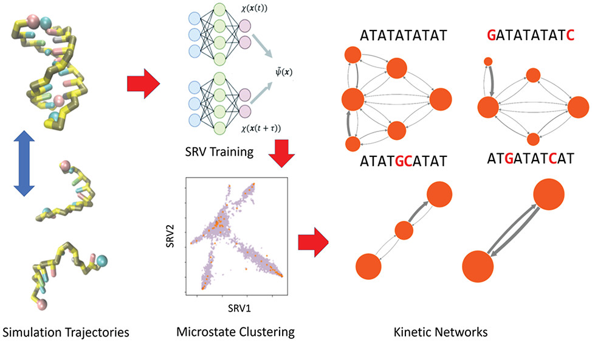

About Me
Hey there! I'm a computational researcher and PhD candidate specializing in machine learning applied biomolecular simulations. I have worked with a variety of nucleic acid and protein systems at the atomistic and coarse-grained levels, and I am generally interested in leveraging machine learning to expand the spaciotemporal resolution of molecular simulations. Please see a summary of my work and links to my publications below:
PhD Research
Select (co) first-author papers:
- DiAMoNDBack: Diffusion-Denoising Autoregressive Model for Non-Deterministic Backmapping of Protein Traces (J. Chem. Theory Comput. 2023, 19, 21, 7908–7923) Paper Code
- Disruption of energetic and dynamic base pairing cooperativity in DNA duplexes by an abasic site (PNAS 2023, 120, ,14, e2219124120) Paper
- Molecular Latent Space Simulators for Distributed and Multimolecular Trajectories (J. Phys. Chem. A 2023, 127, 25, 5470–5490) Paper
- Determining Sequence-Dependent DNA Oligonucleotide Hybridization and Dehybridization Mechanisms Using Coarse-Grained Molecular Simulation, Markov State Models, and Infrared Spectroscopy (J. Am. Chem. Soc. 2021, 143, 42, 17395–17411) Paper
Internships
Here are some projects I've worked on:
- Lawrence Livermore National Lab -- National Ignition Facility (2023)Conference Paper
- Pratt & Whitney -- Dangerous chemical management (2018)
- Aslyum Research -- Application Science (electrochemistry) (2017) Application Note
Random Projects
Exploring Chicago via drone, bike, and data
- Molecular Latent Space Simulators for Distributed and Multimolecular Trajectories (J. Phys. Chem. A 2023, 127, 25, 5470–5490) Paper